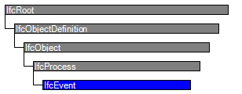

Natural language names
 | Ereignis |
 | Event |
 | Evènement |
| Ereignis |
| Event |
| Evènement |
| Item | SPF | XML | Change | Description | IFC2x3 to IFC4 |
|---|---|---|---|---|
| IfcEvent | ADDED |
An IfcEvent is something that happens that triggers an action or response.
HISTORY New entity in IFC4
Use definitions
IfcEvent is used to capture information about particular things that happen or that may happen. Particularly used in work plans (or process maps) they identify e.g. a point at which a message containing information may be issued or at which a rule or constraint is invoked.
| # | Attribute | Type | Cardinality | Description | C |
|---|---|---|---|---|---|
| 8 | PredefinedType | IfcEventTypeEnum | [0:1] | Identifies the predefined types of an event from which the type required may be set. | X |
| 9 | EventTriggerType | IfcEventTriggerTypeEnum | [0:1] | Identifies the predefined types of event trigger from which the type required may be set. | X |
| 10 | UserDefinedEventTriggerType | IfcLabel | [0:1] | A user defined event trigger type, the value of which is asserted when the value of an event trigger type is declared as USERDEFINED. | X |
| 11 | EventOccurenceTime | IfcEventTime | [0:1] | The date and/or time at which an event occurs. | X |
| Rule | Description |
|---|---|
| CorrectPredefinedType | Either the PredefinedType attribute is unset, or the inherited attribute ObjectType must be asserted when the value of PredefinedType is set to USERDEFINED. |
| CorrectTypeAssigned | Either the EventTriggerType attribute is unset, or the attribute UserDefinedEventTriggerType must be asserted when the value of EventTriggerType is set to USERDEFINED. |

| # | Attribute | Type | Cardinality | Description | C |
|---|---|---|---|---|---|
| IfcRoot | |||||
| 1 | GlobalId | IfcGloballyUniqueId | [1:1] | Assignment of a globally unique identifier within the entire software world. | X |
| 2 | OwnerHistory | IfcOwnerHistory | [0:1] |
Assignment of the information about the current ownership of that object, including owning actor, application, local identification and information captured about the recent changes of the object,
NOTE only the last modification in stored - either as addition, deletion or modification. | X |
| 3 | Name | IfcLabel | [0:1] | Optional name for use by the participating software systems or users. For some subtypes of IfcRoot the insertion of the Name attribute may be required. This would be enforced by a where rule. | X |
| 4 | Description | IfcText | [0:1] | Optional description, provided for exchanging informative comments. | X |
| IfcObjectDefinition | |||||
| HasAssignments | IfcRelAssigns @RelatedObjects | S[0:?] | Reference to the relationship objects, that assign (by an association relationship) other subtypes of IfcObject to this object instance. Examples are the association to products, processes, controls, resources or groups. | X | |
| Nests | IfcRelNests @RelatedObjects | S[0:1] | References to the decomposition relationship being a nesting. It determines that this object definition is a part within an ordered whole/part decomposition relationship. An object occurrence or type can only be part of a single decomposition (to allow hierarchical strutures only). | X | |
| IsNestedBy | IfcRelNests @RelatingObject | S[0:?] | References to the decomposition relationship being a nesting. It determines that this object definition is the whole within an ordered whole/part decomposition relationship. An object or object type can be nested by several other objects (occurrences or types). | X | |
| HasContext | IfcRelDeclares @RelatedDefinitions | S[0:1] | References to the context providing context information such as project unit or representation context. It should only be asserted for the uppermost non-spatial object. | X | |
| IsDecomposedBy | IfcRelAggregates @RelatingObject | S[0:?] | References to the decomposition relationship being an aggregation. It determines that this object definition is whole within an unordered whole/part decomposition relationship. An object definitions can be aggregated by several other objects (occurrences or parts). | X | |
| Decomposes | IfcRelAggregates @RelatedObjects | S[0:1] | References to the decomposition relationship being an aggregation. It determines that this object definition is a part within an unordered whole/part decomposition relationship. An object definitions can only be part of a single decomposition (to allow hierarchical strutures only). | X | |
| HasAssociations | IfcRelAssociates @RelatedObjects | S[0:?] | Reference to the relationship objects, that associates external references or other resource definitions to the object.. Examples are the association to library, documentation or classification. | X | |
| IfcObject | |||||
| 5 | ObjectType | IfcLabel | [0:1] |
The type denotes a particular type that indicates the object further. The use has to be established at the level of instantiable subtypes. In particular it holds the user defined type, if the enumeration of the attribute PredefinedType is set to USERDEFINED.
| X |
| IsDeclaredBy | IfcRelDefinesByObject @RelatedObjects | S[0:1] | Link to the relationship object pointing to the declaring object that provides the object definitions for this object occurrence. The declaring object has to be part of an object type decomposition. The associated IfcObject, or its subtypes, contains the specific information (as part of a type, or style, definition), that is common to all reflected instances of the declaring IfcObject, or its subtypes. | X | |
| Declares | IfcRelDefinesByObject @RelatingObject | S[0:?] | Link to the relationship object pointing to the reflected object(s) that receives the object definitions. The reflected object has to be part of an object occurrence decomposition. The associated IfcObject, or its subtypes, provides the specific information (as part of a type, or style, definition), that is common to all reflected instances of the declaring IfcObject, or its subtypes. | X | |
| IsTypedBy | IfcRelDefinesByType @RelatedObjects | S[0:1] | Set of relationships to the object type that provides the type definitions for this object occurrence. The then associated IfcTypeObject, or its subtypes, contains the specific information (or type, or style), that is common to all instances of IfcObject, or its subtypes, referring to the same type. | X | |
| IsDefinedBy | IfcRelDefinesByProperties @RelatedObjects | S[0:?] | Set of relationships to property set definitions attached to this object. Those statically or dynamically defined properties contain alphanumeric information content that further defines the object. | X | |
| IfcProcess | |||||
| 6 | Identification | IfcIdentifier | [0:1] | An identifying designation given to a process or activity. It is the identifier at the occurrence level. | X |
| 7 | LongDescription | IfcText | [0:1] | An extended description or narrative that may be provided. | X |
| IsPredecessorTo | IfcRelSequence @RelatingProcess | S[0:?] | Dependency between two activities, it refers to the subsequent activity for which this activity is the predecessor. The link between two activities can include a link type and a lag time. | X | |
| IsSuccessorFrom | IfcRelSequence @RelatedProcess | S[0:?] | Dependency between two activities, it refers to the previous activity for which this activity is the successor. The link between two activities can include a link type and a lag time. | X | |
| OperatesOn | IfcRelAssignsToProcess @RelatingProcess | S[0:?] | Set of relationships to other objects, e.g. products, processes, controls, resources or actors, that are operated on by the process. | X | |
| IfcEvent | |||||
| 8 | PredefinedType | IfcEventTypeEnum | [0:1] | Identifies the predefined types of an event from which the type required may be set. | X |
| 9 | EventTriggerType | IfcEventTriggerTypeEnum | [0:1] | Identifies the predefined types of event trigger from which the type required may be set. | X |
| 10 | UserDefinedEventTriggerType | IfcLabel | [0:1] | A user defined event trigger type, the value of which is asserted when the value of an event trigger type is declared as USERDEFINED. | X |
| 11 | EventOccurenceTime | IfcEventTime | [0:1] | The date and/or time at which an event occurs. | X |
Object Typing
The Object Typing concept applies to this entity as shown in Table 10.
| ||
Table 10 — IfcEvent Object Typing |
The IfcEvent defines the anticipated or actual occurrence of any event; common information about event types is handled by IfcEventType.
Property Sets for Objects
The Property Sets for Objects concept applies to this entity as shown in Table 11.
| ||||||||||||||||||||||||||||||||||||
Table 11 — IfcEvent Property Sets for Objects |
Object Nesting
The Object Nesting concept applies to this entity.
IfcEvent may be contained within an IfcTask using the IfcRelNests relationship. The event is considered active during the time period of the enclosing task (including any assigned IfcWorkCalendar); that is such event may be triggered within the task time period but not outside of it. As an IfcEvent is considered to be atomic, no use is anticipated for nesting processes inside the event.
Sequential Connectivity
The Sequential Connectivity concept applies to this entity.
The relationship IfcRelSequence is used to indicate control flow. An IfcEvent as a predecessor (IfcRelSequence.RelatingProcess) indicates that the succeeding process (typically IfcProcedure or IfcTask) is triggered in response to the event. An IfcEvent as a successor (IfcRelSequence.RelatedProcess) indicates that the completion of the preceeding process causes the event to be triggered. As events have zero duration, the IfcRelSequence.SequenceType attribute has no effect on an IfcEvent but still applies to the opposite end of the relationship if IfcTask is used.
Control Assignment
The Control Assignment concept applies to this entity.
An IfcEvent may be assigned to an IfcWorkCalendar to indicate times when such event is active using IfcRelAssignsToControl; otherwise the effective calendar is determined by the nearest IfcProcess ancestor with a calendar assigned.
Product Assignment
The Product Assignment concept applies to this entity.
For building operation scenarios, IfcEvent may be assigned to a product (IfcElement subtype) using IfcRelAssignsToProduct to indicate a specific product occurrence that sources the event.
EXAMPLE An IfcSensor for a motion sensor may have a "Motion Sensed" event. If the IfcEvent is defined by an IfcEventType and the IfcEventType is assigned to a product type (using IfcRelAssignsToProduct), then the IfcEvent must be assigned to one or more occurrences of the specified product type using IfcRelAssignsToProduct.
| # | Concept | Model View |
|---|---|---|
| IfcRoot | ||
| Software Identity | Common Use Definitions | |
| Revision Control | Common Use Definitions | |
| IfcObject | ||
| Object Occurrence Predefined Type | Common Use Definitions | |
| IfcProcess | ||
| IfcEvent | ||
| Object Typing | Common Use Definitions | |
| Property Sets for Objects | Common Use Definitions | |
| Object Nesting | Common Use Definitions | |
| Sequential Connectivity | Common Use Definitions | |
| Control Assignment | Common Use Definitions | |
| Product Assignment | Common Use Definitions | |
<xs:element name="IfcEvent" type="ifc:IfcEvent" substitutionGroup="ifc:IfcProcess" nillable="true"/>
<xs:complexType name="IfcEvent">
<xs:complexContent>
<xs:extension base="ifc:IfcProcess">
<xs:sequence>
<xs:element name="EventOccurenceTime" type="ifc:IfcEventTime" nillable="true" minOccurs="0"/>
</xs:sequence>
<xs:attribute name="PredefinedType" type="ifc:IfcEventTypeEnum" use="optional"/>
<xs:attribute name="EventTriggerType" type="ifc:IfcEventTriggerTypeEnum" use="optional"/>
<xs:attribute name="UserDefinedEventTriggerType" type="ifc:IfcLabel" use="optional"/>
</xs:extension>
</xs:complexContent>
</xs:complexType>
ENTITY IfcEvent
SUBTYPE OF (IfcProcess);
PredefinedType : OPTIONAL IfcEventTypeEnum;
EventTriggerType : OPTIONAL IfcEventTriggerTypeEnum;
UserDefinedEventTriggerType : OPTIONAL IfcLabel;
EventOccurenceTime : OPTIONAL IfcEventTime;
WHERE
CorrectPredefinedType : NOT(EXISTS(PredefinedType)) OR (PredefinedType <> IfcEventTypeEnum.USERDEFINED) OR ((PredefinedType = IfcEventTypeEnum.USERDEFINED) AND EXISTS(SELF\IfcObject.ObjectType));
CorrectTypeAssigned : NOT(EXISTS(EventTriggerType)) OR (EventTriggerType <> IfcEventTriggerTypeEnum.USERDEFINED) OR ((EventTriggerType = IfcEventTriggerTypeEnum.USERDEFINED) AND EXISTS(UserDefinedEventTriggerType));
END_ENTITY;
 Instance diagram
Instance diagram Link to this page
Link to this page